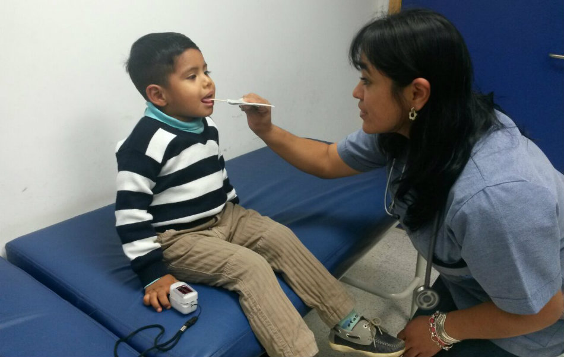
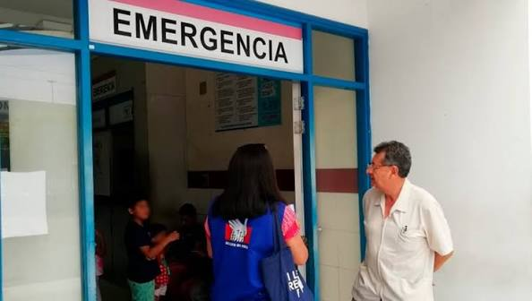

Cuidando la salud de toda la región
Accede a nuestros servicios médicos y reserva tu cita presencial de manera rápida, segura y sin hacer filas.
Reservar Cita AhoraNuestras Especialidades
Medicina General
Atención integral para el diagnóstico temprano y tratamiento de enfermedades comunes.

Pediatría
Cuidado especializado, control y seguimiento para el desarrollo saludable de los más pequeños.
Cardiología
Prevención, diagnóstico y tratamiento de enfermedades del corazón y el sistema circulatorio.

Emergencias
Atención prioritaria e inmediata de casos críticos con soporte vital avanzado.
Información al Paciente
Para garantizar una atención fluida y oportuna, le recordamos presentarse en el área de admisión 15 minutos antes de su cita programada portando su documento de identidad original.
Central Telefónica:
(084) 222222
Ubicación:
Av. de la Cultura, Cusco
Horario de Emergencias:
Lunes a Domingo 24hrs